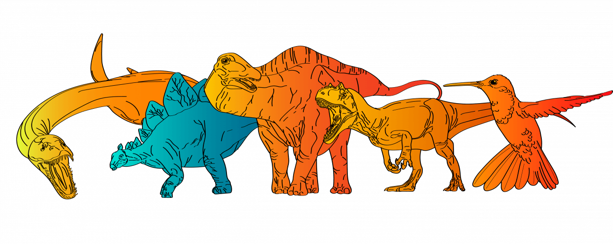

I'm hosted with GitHub Pages.
Los dinosaurios son un grupo diverso y fascinante de reptiles que dominaron la Tierra durante gran parte de la era Mesozoica, desde hace aproximadamente 230 millones de años hasta hace unos 65 millones de años. Su nombre, "dinosaurio", proviene del griego y significa "lagarto terrible". Estos animales han capturado la imaginación popular durante siglos debido a su tamaño impresionante, su variedad de formas y comportamientos, y su dramática extinción
La Era Mesozoica, que abarca desde hace aproximadamente 252 millones de años hasta hace unos 66 millones de años, es una de las divisiones más importantes en la historia geológica de la Tierra. Conocida como la "Era de los Dinosaurios", la Mesozoica se subdivide en tres períodos principales: el Triásico, el Jurásico y el Cretácico. A continuación, se ofrece una descripción detallada de cada período:
La vegetación estaba compuesta principalmente por helechos, coníferas y plantas similares a las palmeras. Los vertebrados terrestres incluían los primeros mamíferos, reptiles como los primeros dinosaurios, terápsidos (ancestros de mamíferos), y anfibios.
Durante este período, los dinosaurios comenzaron a diversificarse y a expandirse por diferentes nichos ecológicos. También hubo extinciones masivas, como la Extinción del Triásico-Jurásico al final del Triásico temprano, que afectó a muchas especies, permitiendo la expansión de los dinosaurios y otros grupos.
Durante el Jurásico, el clima se volvió más húmedo y cálido, con una elevada concentración de oxígeno en la atmósfera. Los continentes continuaron separándose, y surgieron nuevos océanos y masas terrestres.
La vegetación se diversificó, con la aparición de las primeras plantas con flores. Los dinosaurios dominaban tanto en tierra como en mar, incluidos los saurópodos gigantes, los terópodos carnívoros y los ornitópodos herbívoros. Además de los dinosaurios, los pterosaurios y los primeros mamíferos eran comunes.
Este período se caracterizó por la expansión y diversificación de los dinosaurios, así como la aparición de nuevas formas de vida marina, como los icónicos reptiles marinos como el Plesiosaurio e Ichthyosaurio.
Durante el Cretácico, el clima era generalmente cálido y húmedo, con grandes extensiones de selvas tropicales y un nivel del mar alto. La fragmentación continua de Pangea condujo a la formación de continentes y océanos como los conocemos hoy en día.
La flora estaba dominada por coníferas, helechos y plantas con flores en expansión. Los dinosaurios alcanzaron su apogeo en diversidad y tamaño, con la aparición de especies icónicas como el Tyrannosaurus rex, el Triceratops y el Velociraptor. Los reptiles marinos continuaron prosperando, y las aves modernas evolucionaron a partir de pequeños dinosaurios terópodos.
El Cretácico vio la continuación de la radiación de los dinosaurios y el desarrollo de ecosistemas complejos en todo el mundo. Sin embargo, al final del período, ocurrió la extinción masiva del Cretácico-Paleógeno, que llevó a la desaparición de los dinosaurios no aviares, así como de muchos otros grupos de organismos. Se cree que esto fue causado por un impacto de asteroide en la península de Yucatán (México) o la actividad volcánica masiva en la región de los trappes del Decán (India), que resultó en cambios ambientales catastróficos.
Evidencia Fósil: Los fósiles más antiguos que se consideran verdaderos dinosaurios pertenecen al género Nyasasaurus, descubierto en Tanzania. Estos fósiles datan de hace aproximadamente 245 millones de años, lo que sugiere que los dinosaurios surgieron relativamente poco después del evento de extinción masiva al final del período Pérmico.
Terópodos: Son dinosaurios carnívoros, como el Tyrannosaurus rex, Velociraptor y Allosaurus.
Sauropodomorfos: Son dinosaurios herbívoros con cuellos largos y cuerpos masivos, como el Brachiosaurus, Apatosaurus y Diplodocus.
Ornitópodos: Son dinosaurios herbívoros con picos córneos y a menudo con patas traseras largas y patas delanteras más cortas, como el Triceratops y el Iguanodon.
Marginocéfalos: Incluye dinosaurios con cráneos con adornos óseos, como el Pachycephalosaurus.
Tireóforos: Estos dinosaurios tienen armaduras o espinas, como el Stegosaurus y el Ankylosaurus.